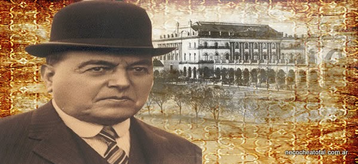

Imagen de Hipolito Yrigoyen durante periodo presidencial.
La vida de Hipólito Yrigoyen
- Su nombre completo era Juan Hipólito del Sagrado Corazón de Jesús Yrigoyen.
- Fue presidente de la República Argentina en dos ocasiones: de 1916 a 1922 (la primera vez que un radical accedía al poder) y de 1928 a 1930. Durante su primera gestión, contó con un gran apoyo popular; sin embargo, su partido debió insistir varias veces para que aceptara la candidatura.
- Mantuvo una forma de vida austera y sencilla; esto generó que muchos de sus opositores lo juzgaran de demagogo. Él continuó viviendo en su casa de la calle Brasil, en barrio porteño de Constitución.
- La Unión Cívica Radical fue fundada por su tío, Leandro N. Alem, el 26 de junio de 1891.
- La situación económica de su familia lo obligó a trabajar desde muy joven: primero en una compañía de transportes, luego como ayudante en un estudio de abogados y también como escribiente de la contaduría general de un área estatal.
- Si bien ingresó a la Facultad de Derecho de la Universidad de Buenos Aires, se dice que no hay pruebas de que haya terminado la carrera.
- Su sueldo de Presidente lo donaba a la Sociedad de Beneficencia; sus otros ingresos lo obtenía como productor agropecuario.
- Ya en el gobierno, introdujo nuevas formas de hacer gestión. Por ejemplo, no elegía a sus ministros por su formación intelectual, sino en relación con otros aspectos que reconocía más importantes. Para los puestos militares, designó a civiles y no a integrantes de las Fuerzas Armadas.
- Siempre creyó que el voto era la herramienta de igualdad para todos los ciudadanos.
- En el ámbito universitario, estuvo a favor de la renovación y actualización de los planes de estudio que reclamaban los estudiantes del llamado "movimiento reformista".
- En materia económica, a principio del siglo XX, Argentina ejercía su gran modelo agroganadero. Yrigoyen, según algunos diarios nacionales, fue uno de lo que “nacionalizó la explotación petrolera e impulsó la primera fase de la industria de los hidrocarburos”.
- La Semana Trágica y la represión en la Patagonia, entre 1919 y 1921, oscurecieron muchos de sus logros políticos.
- Su gobierno fue derrocado en 1930 por un grupo de militares comandado por José Félix Uriburu.
- Murió tres años después de su caída política.
- Recién en 1963 otro radical volvería a ser electo para presidente: Arturo Humberto Illia.
"Es indispensable fijar como condición irreductible que la moral política es la base de todos los
progresos y de todas sus formas eficientes, restableciendo el poder, siempre vivificante de sus
principios "
Hipólito Yrigoyen.